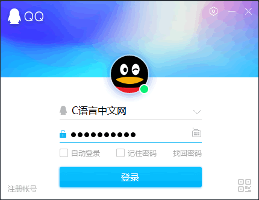
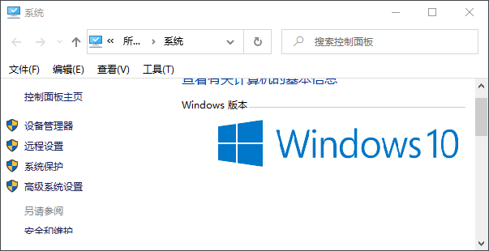
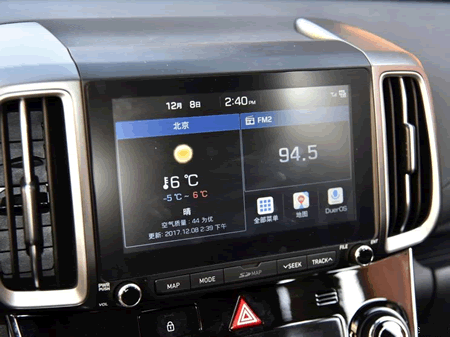
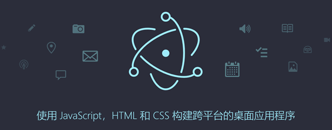

GUI是什么
图形用户界面（Graphical User Interface，简称 GUI），是计算机图形学技术的一种，它一般由窗口、下拉菜单或者对话框等图形化的控件组成。用户通过点击菜单栏、按钮或者弹出对话框的形式来实现与机器的交互，GUI 的存在拉近了人与计算机的的距离，让人机交互的过程变得简单舒适、有温度。
在正式讲解 Tkinter 之前，我们有必要对“图形用户界面”这一名词做简单的介绍。
如果您是第一次接触“图形用户界面”这个名词，一定会比较迷茫，其实在我们的日常工作与学习中，我们经常与它“相遇”，举一个简单的例子，当打开腾讯 QQ 后，在电脑桌面上会弹出 QQ 的登录界面，成功登录 QQ 后会显示 QQ 的主界面，这些都可以被称作图形用户界面，它的任务就是完成与用户的交互，如下所示：
然而，图形用户界面的真正火热，是伴随着 Windows 系统的出现而兴盛起来的。
20 世纪初，微软相继发布了 Windows 95、Windows 98、Windows XP 等版本，其中 Windows XP 更是直接奠定了微软在操作系统领域的“霸主”地位，此时的计算机图形界面才日趋为完善和成熟起来。如果您接触过微软公司开发的 VB（Visual Basic）程序语言，您就能体验到微软在 GUI 方面功力深厚。VB 语言拥有许多 GUI 控件，通过这些可视化控件能够迅速建立一个应用程序。
经过上述介绍，我们知道，图形用户界面（即 GUI）指的是采用图形方式来显示计算机的用户操作界面，它是人与计算机交互的一种方式。用户通过鼠标、键盘、触摸等操作来控制屏幕上的图标、菜单等选项卡，从而实现选择功能，或者启动程序等操作。
与早期的命令行界面相比，图形界面对于用户更加友好，使用户在视觉上更容易接受。由于 GUI 直接与用户交互，因此它不仅仅是计算机中的一门技术，它还涉及了美学、行为学、心里学等许多领域的知识。因此在开发、设计一款 GUI 产品时，不能只局限于技术层面，而要对全局进行把控，最终使产品更符合人性化，从而提高用户的使用体验。
Qt 是由 Qt Company 开发的一个跨平台的 C++ 框架（现已被 Digia 公司收购），目前最新的版本是 Qt5。Qt 除了支持界面设计（GUI编程），还封装了与网络编程、多线程、数据库连接、视频音频等相关的功能。
图5：GUI Qt 图标
除 C/C++ 之外，Python、Java、C# 等语言也提供了一些 GUI 开发软件包，如下所示：
虽然上述语言的性能不及 C/C++，但是它们的开发效率很高，因此在性能要求不高的情况下，这些软件包也能够满足大多数用户的需求。大家要铭记，开发 GUI 程序的目的是为了实现人机交互，提升设备或者 APP 软件的易用性，这是 GUI 程序的初衷。
在正式讲解 Tkinter 之前，我们有必要对“图形用户界面”这一名词做简单的介绍。
如果您是第一次接触“图形用户界面”这个名词，一定会比较迷茫，其实在我们的日常工作与学习中，我们经常与它“相遇”，举一个简单的例子，当打开腾讯 QQ 后，在电脑桌面上会弹出 QQ 的登录界面，成功登录 QQ 后会显示 QQ 的主界面，这些都可以被称作图形用户界面，它的任务就是完成与用户的交互，如下所示：

图1：QQ登录界面
再比如 Windows 操作系统的电脑桌面，本质上也是“图形用户界面”，只不过与 APP 相比，计算机用户界面更为复杂，在桌面上出现的任何一个弹出框都可以看做是一个“图形用户界面”如下所示：图1：QQ登录界面

图2：系统信息界面
图2：系统信息界面
GUI发展史
上世纪 70 年代，美国施乐研究中心完成了第一个比较完善的图形界面程序（即 WIMP 程序），该程序包含了窗口、图标、菜单和下拉菜单等。随后世界著名的苹果公司于 1983 年发布了一款电子图表软件（Lisa），这也是世界上第一款具有完整界面的计算机软件。然而，图形用户界面的真正火热，是伴随着 Windows 系统的出现而兴盛起来的。
20 世纪初，微软相继发布了 Windows 95、Windows 98、Windows XP 等版本，其中 Windows XP 更是直接奠定了微软在操作系统领域的“霸主”地位，此时的计算机图形界面才日趋为完善和成熟起来。如果您接触过微软公司开发的 VB（Visual Basic）程序语言，您就能体验到微软在 GUI 方面功力深厚。VB 语言拥有许多 GUI 控件，通过这些可视化控件能够迅速建立一个应用程序。
不难看出，虽然苹果公司在 GUI 领域起步较早，但却被微软后来者居上，至于 Linux 系统，它的的图形界面则起步更晚。
在 GUI 发展的过程中，微软、苹果、施乐等公司为 GUI 领域的发展做了重要贡献。图形用户界面是人类历史上最伟大的发明创造之一，它对计算机的普及与进一步发展起到了意义深远的影响。
经过上述介绍，我们知道，图形用户界面（即 GUI）指的是采用图形方式来显示计算机的用户操作界面，它是人与计算机交互的一种方式。用户通过鼠标、键盘、触摸等操作来控制屏幕上的图标、菜单等选项卡，从而实现选择功能，或者启动程序等操作。
GUI应用领域
GUI 的应用领域非常广泛，它不仅仅局限于软件产品（app）、计算机操作系统界面，还囊括了车载系统产品、智能家居、电子数码等产品，比如汽车中控台的显示屏界面，或者行车记录仪界面等等。

图3：汽车中控台显示屏
图3：汽车中控台显示屏
GUI的优势
GUI 在互联网行业中有着举足轻重的地位，那些专门从事于界面开发的程序员被称为 GUI 开发工程师，如果在细分的话，可分为软件界面开发工程师和硬件界面开发工程师，它们统称为“界面开发程序员”。当然界面开发工作也需要配合其他岗位一起完成，比如前端 UI 工程师（User Interface Designer），他们主要负责界面的美化和设计等工作。与早期的命令行界面相比，图形界面对于用户更加友好，使用户在视觉上更容易接受。由于 GUI 直接与用户交互，因此它不仅仅是计算机中的一门技术，它还涉及了美学、行为学、心里学等许多领域的知识。因此在开发、设计一款 GUI 产品时，不能只局限于技术层面，而要对全局进行把控，最终使产品更符合人性化，从而提高用户的使用体验。
GUI开发工具
目前市面上的 GUI 开发软件包有很多，其中多数使用 C/C++ 语言开发，其中较为流行的框架有 Qt 、GTK、wxWidgets、Electron、MFC/ATL（微软公司开发） 等。Electron 较为特殊，它是由 C/C++ 和 JS、TypeScript 开发而成，它通过 JavaScript、HTML 和 CSS 来构建跨平台的桌面应用程序，这在以前是不可想象的。

图4：GUI 开发工具 Electron
图4：GUI 开发工具 Electron
Qt 是由 Qt Company 开发的一个跨平台的 C++ 框架（现已被 Digia 公司收购），目前最新的版本是 Qt5。Qt 除了支持界面设计（GUI编程），还封装了与网络编程、多线程、数据库连接、视频音频等相关的功能。
图5：GUI Qt 图标
C语言中文网推出了《Qt教程》，如果想深入了解，请点击学习。
您可能会问，为什么要采用 C/C++ 库来开发 GUI 软件包呢？这是因为相比于其他语言，C/C++ 更适合于开发 GUI 程序。我们知道 GUI 程序其实就是人和计算机的交互操作，因此程序的运行性能是考虑的第一要素，若性能不佳，将非常影响用户的体验。 C/C++ 作为执行效率仅次于汇编语言的编译型语言，用来开发 GUI 软件包在合适不过了。除 C/C++ 之外，Python、Java、C# 等语言也提供了一些 GUI 开发软件包，如下所示：
- Python GUI 工具：Tkinter、wxPython、PyQt、PyGTK、Pywin32 等；
- Java GUI 工具：AWT、SWING、JavaFX 等；
- C# GUI 工具： WinForm、WPF 等；
虽然上述语言的性能不及 C/C++，但是它们的开发效率很高，因此在性能要求不高的情况下，这些软件包也能够满足大多数用户的需求。大家要铭记，开发 GUI 程序的目的是为了实现人机交互，提升设备或者 APP 软件的易用性，这是 GUI 程序的初衷。
关注公众号「站长严长生」，在手机上阅读所有教程，随时随地都能学习。内含一款搜索神器，免费下载全网书籍和视频。

微信扫码关注公众号